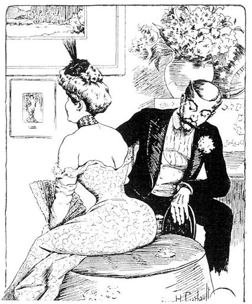

mailto:payer@payer.de
Zitierweise | cite as:
Payer, Alois <1944 - >: Sanskritkurs. -- 44. Lektion 44. -- Fassung vom 2009-01-22. -- URL: http://www.payer.de/sanskritkurs/lektion44.htm
Erstmals hier publiziert: 2009-01-08
Überarbeitungen: 2009-01-22 [Verbesserungen]
Anlass: Lehrveranstaltungen 1980 - 1984
©opyright: Dieser Text steht der Allgemeinheit zur Verfügung. Eine Verwertung in Publikationen, die über übliche Zitate hinausgeht, bedarf der ausdrücklichen Genehmigung des Verfassers
Dieser Text ist Teil der Abteilung Sanskrit von Tüpfli's Global Village Library
Falls Sie die diakritischen Zeichen nicht dargestellt bekommen, installieren Sie eine Schrift mit Diakritika wie z.B. Tahoma.
Die Devanāgarī-Zeichen sind in Unicode kodiert. Sie benötigen also eine Unicode-Devanāgarī-Schrift.
Die 3.sg.Ā.Imperfekt ist formgleich mit der 2.pl.P.Imperfekt!!!
सु 5U
परस्मैपदम् आत्मनेपदम् एकवचनम् बहुवचनम् एकवचनम् बहुवचनम् Indikativ Präsens
लट्सुनोषि
Cerebralisation!सुनुथ सुनुषे
Cerabralisation!सुनुध्वे Imperfekt
लङ्असुनोस् असुनुत असुनुथास् सुनुध्वम् Optativ
विधिलिङ्सुनुयास् सुनुयात सुन्वीथास् सुन्वीध्वम्
तन् 8U
परस्मैपदम् आत्मनेपदम् एकवचनम् बहुवचनम् एकवचनम् बहुवचनम् Indikativ Präsens
लट्तनोषि तनुथ तनुषे तनुध्वे Imperfekt
लङ्अतनोस् अतनुत अतनुथास् अतनुध्वम् Optativ
विधिलिङ्तनुयास् तनुयात तन्वीथास् तन्वीध्वम्
कृ 8U
परस्मैपदम् आत्मनेपदम् एकवचनम् बहुवचनम् एकवचनम् बहुवचनम् Indikativ Präsens
लट्करोषि कुरुथ कुरुषे कुरुध्वे Imperfekt
लङ्अकरोस् अकुरुत अकुरुथास् अकुरुध्वम् Optativ
विधिलिङ्कुर्यास् कुर्यात कुर्वीथास् कुर्वीध्वम्
परस्मैपदम् आत्मनेपदम् एकवचनम् बहुवचनम् एकवचनम् बहुवचनम् Indikativ Präsens
लट्क्रीणासि क्रीणीथ क्रीणीषे
Cerebralisation!क्रीणीध्वे Imperfekt
लङ्अक्रीणास् अक्रीणीत अक्रीणीथास् अक्रीणीध्वम् Optativ
विधिलिङ्क्रीणीयास् क्रीणीयात क्रीणीथास्
krī + n + ī-thāsक्रीणीध्वम्
krī + n + ī-dhvam
Bei konsonantisch auslautenden Präsensstämmen sind die schon behandelten Gesetze des Wortsandhi zu beachten.
Außerdem kommen noch folgende Gesetze des Wortsandhi zur Anwendung.
(Ausführliche Zusammenstellung aller hierher gehörigen Lautveränserungen bei Kielhorn, Grammatik S. 76f.)
1. Aspirata wird vor Aspirata durch den
entsprechenden Nichtspiraten ersetzt:
2. -h + dh- » -gdh-
3. -ṣ + dh- » -ḍḍh- (Diese Regel gilt nur für die Konjugation!)
4. -s + dh- » -dh- (Wegfall des -s)
|
1. -s + s- » -ts- oder (nicht wahlweise!)
-ss- (so in 2. Präsensklasse)
2. -ṣ + s- » -kṣ-
|
द्विष् 2U
परस्मैपदम् आत्मनेपदम् एकवचनम् बहुवचनम् एकवचनम् बहुवचनम् Indikativ Präsens
लट्द्वेक्षि द्विष्ठ द्विक्षे द्विड्ढ्वे Imperfekt
लङ्अद्वेट्
a-dveṣ + sअद्विष्ट अद्विष्ठास् द्विड्ढ्वम् Optativ
विधिलिङ्द्विष्यास् द्विष्यात द्विषीथास् द्विषीध्वम्
आस् 2Ā
आत्मनेपदम् एकवचनम् बहुवचनम् Indikativ Präsens
लट्आस्से आध्वे Imperfekt
लङ्आस्थास् आध्वम् Optativ
विधिलिङ्आसीथास् आसीध्वम्
दुह् 2U
परस्मैपदम् आत्मनेपदम् एकवचनम् बहुवचनम् एकवचनम् बहुवचनम् Indikativ Präsens
लट्धोक्षि दुग्ध धुक्षे धुग्ध्वे Imperfekt
लङ्अधोक्
aus: adhokṣअदुग्ध अदुग्धास् अधुग्ध्वम् Optativ
विधिलिङ्दुह्यास् दुह्यात दुहीथास् दुहीध्वम्
इ 2P
परस्मैपदम् आत्मनेपदम् एकवचनम् बहुवचनम् एकवचनम् बहुवचनम् Indikativ Präsens
लट्एषि इथ <इषे> <इध्वे> Imperfekt
लङ्ऐस्
a + e + sऐत
a + i + taOptativ
विधिलिङ्इयास् इयात इयीथास्
iy-ī-thāsइयीध्वम्
हन् 2P
परस्मैपदम् एकवचनम् बहुवचनम् Indikativ Präsens
लट्हंसि
han + siहथ
aus: *hn + taImperfekt
लङ्अहन्
aus: a-han +sअहत
aus: a-*hn + taOptativ
विधिलिङ्हन्यास् हन्यात
स्तु 2U
परस्मैपदम् आत्मनेपदम् एकवचनम् बहुवचनम् एकवचनम् बहुवचनम् Indikativ Präsens
लट्स्तौषि
स्तवीषिस्तुथ
स्तुवीथस्तुषे
स्तुवीषेस्तुध्वे
स्तुवीध्वेImperfekt
लङ्अस्तौस्
अस्तवीस्स्तुत
अस्तुवीतअस्तुथास्
अस्तुवीथास्स्तुध्वम्
अस्तुवीध्वम्Optativ
विधिलिङ्स्तुयास्
स्तुवीयास्स्तुयात
स्तुवीयातस्तुवीथास्
stu + ī-thāsस्तुवीध्वम्
अस् 2P (besonders zu merken!)
परस्मैपदम् एकवचनम् बहुवचनम् Indikativ Präsens
लट्असि स्थ Imperfekt
लङ्आसीस् आस्त Optativ
विधिलिङ्स्यास् स्यात
तत्त्वमसि
शास् 2P
परस्मैपदम् एकवचनम् बहुवचनम् Indikativ Präsens
लट्शास्सि शिष्ठ Imperfekt
लङ्अशास् अशिष्ट Optativ
विधिलिङ्शिष्यास् शिष्यात
अद् 2P bildet die 2. und 3.sg.P.Imperfekt thematisch!
परस्मैपदम् एकवचनम् बहुवचनम् Indikativ Präsens
लट्अत्सि अत्थ Imperfekt
लङ्2.sg. आदस् 3.sg. आदत्
अत्त Optativ
विधिलिङ्अद्यास् द्यात
Die einheimischen Grammatiker betrachten den Vokativ (आमन्त्रितम्) nicht als eigenen Kasus, sondern nur als Modifikation des Nominativ (प्रथमा).
| Der Vokativ dient dem Anruf, dem
Ansprechen und steht außerhalb des Zusammenhangs mit dem übrigen
Satz, unterscheidet sich also von den anderen Kasus, die eine
Beziehung zum Verb oder zu einem anderen Nomen ausdrücken. Meist wird der Vokativ an den Beginn des Satzes gestellt:
Man vermeide die Übersetzung des Vokativ mit "O ...". Wir benutzen im Deutschen ständig Vokative, wenn wir z.B. sagen: "Schatz, was kochen wir heute?". Niemand wird in dieser Bedeutung sagen: "O Schatz, was kochen wir heute?"
|

Abb.: Zur richtigen Verwendung von "O" im Deutschen: "O
Mann!"
Zeichnung von Henri Gerbault (1863 - 1930) (Public domain)
| Die Formen des Vokativ Plural
und Dual sind
identisch mit denen des Nominativ (प्रथमा) Plural bzw. Dual. Die Formen des Vokativ Singular folgen in Lektion 45. |
प्रति Präverb: zurück, wider, gegen - hin
z.B.
हन् + प्रति 2P प्रतिहन्ति : zurückschlagen
वद् + प्रति 1P प्रतिवदति : zurücksagen = antworten
ख्या + प्रति + आ 2P प्रत्याख्याति : zurückweisen, verschmähen
या 2P याति : gehen, fahren
Perf. IV ययौ
Fut. यास्यति
Pass. यायते
Kaus. यापयति
PPP यात
Inf. यातुम्davon:
यान n.: Gehen, Weg, Fahrzeug
Abb.: रेल्यानम्
वाराणआस्याम्, १९७४
[Bildquelle: danielguip. --
http://www.flickr.com/photos/danielguip/118349247/. -- Zugriff am
2009-01-08. --
Creative
Commons Lizenz (Namensnennung, keine kommerzielle Nutzung, keine
Bearbeitung)]
शी 2Ā शेते : liegen. Diese Wurzel hat in allen Formen des Präsensstamms Hochstufe: 1.sg.Ind.Präs.Ā शेये (śe + e). Folgende Formen sind besonders zu beachten: 3.pl.Ind.Präs.Ā शेरते , 3.pl.Imperf.Ā अशेरत
Perf. IIIa शिश्ये (śi-śī + e)
Fut. शयिष्यते
Kaus. शापयति
PPP शयित
Inf. शयितुम्davon:
शयन n.: Liege, Bett
Abb.: योगी शयने शेते
[Bildquelle: Gurumustuk Singh. --
http://www.flickr.com/photos/mrsikhnet/218757195/. -- Zugriff am 2009-01-08.
-- Creative
Commons Lizenz (Namensnennung, keine kommerzielle Nutzung, share alike)]
नन्द् 1P नन्दति : sich freuen an (तृतीयया)
Perf. I ननन्द
Fut. नन्दिष्यति
Pass.: नन्द्यते
Kaus. नन्दयति
PPP नन्दित
Inf. नन्दितुम्
Absol. -नन्द्य
Gerundiv नन्द्यdavon:
नन्दिन् 3: durch (besondere) Freude gekennzeichnet, freudig ; m. Name des Reittiers (वहन) des शिव (ein Stier)
Abb.: नन्दी
Kodagu = ಕೊಡಗು
[Bildquelle: mattlogelin. --
http://www.flickr.com/photos/mattlogelin/377335641/. -- Zugriff am
2009-01-08. --
Creative Commons Lizenz (Namensnennung, keine kommerzielle Nutzung)]
नन्द् + अभि 1P (1Ā) अभिनन्दति : seine Freude haben an (द्वितीयया), jemanden freudig begrüßen, willkommen heißen
यम् 1P यच्छति : halten, tragen ; darreichen, gewähren ; zusammenhalten, bändigen, zügeln, bezwingen
Perf. Vb ययाम, येमुर्
Fut. यंस्यति
Pass. यम्यते
Kaus. यामयति aber: नियमयति
PPP यत
Inf. यन्तुम्
Absol. -यम्य
यम् + आ 1U आयच्छति : dehnen, ausstrecken
PPP आयत 3: lang gestreckt
Abb.: आयतो मरुः (मरु m. = "Wüste")
थार मरुस्थल
[Bildquelle: Amre Ghiba. --
http://www.flickr.com/photos/amre/1476216243/. -- Zugriff am 2009-01-08. --
Creative Commons
Lizenz (Namensnennung, keine kommerzielle Nutzung)]
यम् + प्र 1P प्रयच्छति : darreichen, anbieten, übergeben
यम् + सम् 1P संयच्छति : zusammenbinden, anbinden, bändigen
यत् 1Ā यतते : streben nach (सप्तमी, चतुर्थी, द्वितीया)
Perf. Vb येते
Fut. यतिष्यते
Pass. यत्यते
Kaus. यातयति
PPP यत्त
Inf.यतितुम्davon:
यत्न m.: Bemühung, Anstrengung
Abb.: यत्नेन
Kollam = കൊല്ലം
[Bildquelle: MalayalaM. --
http://www.flickr.com/photos/malayalam/35026906/. -- Zugriff am 2009-01-08.
--
Creative Commons Lizenz (Namensnennung, keine kommerzielle Nutzung, share
alike)]
रभ् 1Ā रभते (Nebenform zu लभ्): fassen
Perf. Vb रेभे
Fut. रप्स्यते
Pass. रभ्यते
Kaus. रम्भयति
PPP रब्ध
Inf. रब्धुम्
Absol. -रभ्य
रभ् + आ 1Ā आरभते : anfassen, beginnen, unternehmen
प्रव्रज्या f. (zu प्र-व्रज्): das Fortgehen aus dem Heim in die Heimlosigkeit ; Zeremonie, mit der man buddhistischer Novize wird (Pali: पब्बजा)
Siehe:
Payer, Alois <1944 - >: Vinayamukha : Grundbegriffe der Ordensregeln und des Ordensrechts des Theravāda. -- Teil I. -- (Materialien zu den Grundbegriffen des Buddhismus). -- URL: http://www.payer.de/buddhgrund/vinaya01.htm
Abb.: प्रव्रअज्या / पब्बजा
Thailand = ประเทศไทย
[Bildquelle: Midpath. -- http://www.flickr.com/photos/midpath/342678518/. -- Zugriff am 2009-01-08. -- Creative Commons Lizenz (Namensnennung, keine kommerzielle Nutzung, keine Bearbeitung)]
A) Bestimmen und übersetzen Sie folgende Formen:
Abb.: कस्माद्रोदिषि
[Bildquelle: bartpogoda. --
http://www.flickr.com/photos/bartpogoda/2068996900/. -- Zugriff am
2009-01-08. --
Creative
Commons Lizenz (Namensnennung, keine kommerzielle Nutzung, keine
Bearbeitung)]
B) Übersetzen Sie:
अक्रोधेन जयेत्क्रोधमसाधुं सधुना जयेज्जयेत्सत्येन चानृतम् ॥१॥
पुत्राः किं पितृभ्यः पिण्डान्प्रायच्छत ॥२॥
कानि शास्त्राणि काश्यामध्यैथाः ॥३॥
बुद्धपुत्राश्चेन्महाशयनेषु शयीरन्प्रव्रज्यायां कृतं व्रतं न चरेयुः ॥४॥
अप्यार्ययुद्धाख्यानमाख्यास्यन्तं गुरुमभ्यनन्दः ॥५॥
द्वेष्यमपि न द्विष्यात लोभनीयं च न लुभ्येतैवं च प्रसन्ना भविष्यथ ॥६॥
न योत्स्य इत्यर्जुन उवाच ॥७॥
अशोच्यानशोचः प्रज्ञावादांश्च प्रवक्तुमैच्छः ।
मृताञ्जीवतश्च बुद्धिमन्तो न शोचन्ति ॥८॥
Bestimmen Sie folgende Formen:
Zu Lektion 45